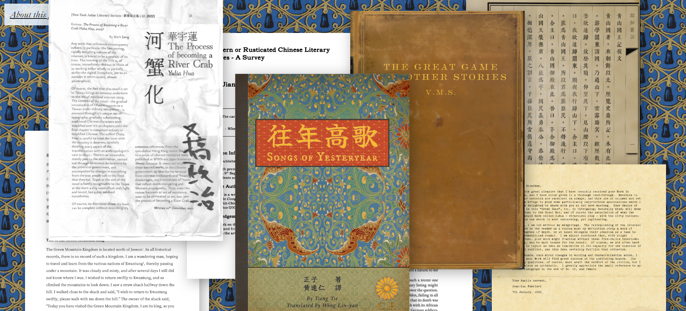

The Zheng Zi Archive
One of the first international projects we've worked with, the Institute is proud to support the archival work of the Zheng Zi Archive, which promotes our mission of preserving historical works from lesser known authors and those outside of the cultural mainstream.
Zheng Zi Archive (External Site)
Back